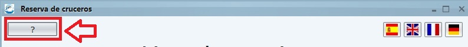

En el panel superior de la aplicación encontrará el menú de ayuda y los botones de cambio de idioma.
Si necesita ayuda en cualquier momento durante la reserva de su crucero puede pulsar el boton de ayuda o pulsar la tecla "F1".
Si desea cambiar de idioma de la aplicación para facilitarle el uso de esta puede hacerlo pulsando cualquier de los botones del panel de idiomas.
Si desea que el idioma de la aplicación sea el castellano, pulse aquí.
Si desea que el idioma de la aplicación sea el inglés, pulse aquí.
Si desea que el idioma de la aplicación sea el francés, pulse aquí.
Si desea que el idioma de la aplicación sea el alemán, pulse aquí.